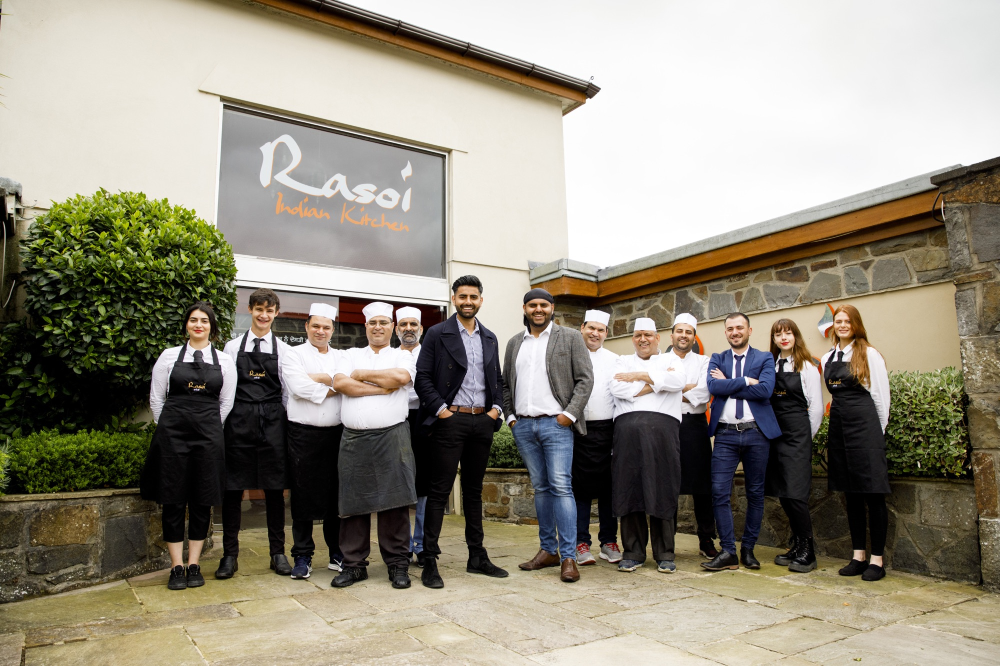
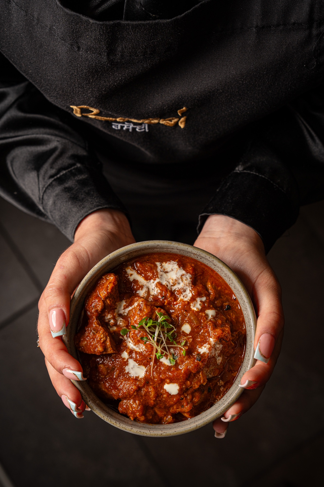

Our Story
It started in 2011 — Jas and Suki Kullar, barely out of their teens, opening Rasoi in a quiet Pontlliw village. Built on family recipes, bold ambition and a desire to show Swansea a different side of Indian cooking — generous, modern, and rooted in something real.

Our Heritage
Rasoi — the Punjabi word for kitchen — is exactly what we set out to build: a kitchen that felt like family. We opened in Pontlliw because Swansea deserved something distinct — authentic Indian cooking, reimagined for a modern table, in a room where every guest is welcome.
Our inspiration came from summers in Punjab: the colour, noise and heat of the street markets, the smell of charcoal tandoors, the taste of recipes passed down through generations. Working with chefs recruited from across the world, we set out to bring that energy inside four walls in a Welsh village.
"We believe food is about having fun and being inventive."

The Philosophy
Our menu is rooted in heritage but never nostalgic. Butter chicken perfected over years of patient cooking. Tandoori lamb chops charred over open flame. Naan sandwiches that break every rule and make perfect sense on the plate. We move the kitchen forward every season — but we never lose sight of where it came from.
Our team operates as a family. It's the secret to what we do.
See what's on the menuCome and sit with us
Reserve a table in Pontlliw, or take our kitchen home with you.
Awards & Recognition
Recognised for excellence in food and hospitality.